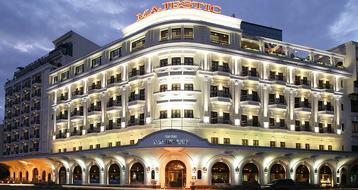
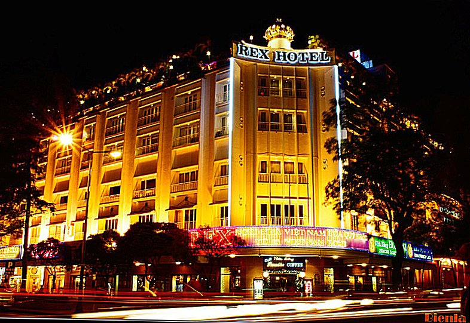
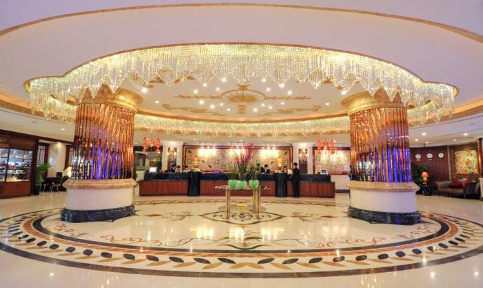

<html>
<head>
       <meta name="viewport" content="width=device-width, initial-scale=1.0">
       <link rel="stylesheet" type="text/css" href="./ToanpdFX15532 ASM4 khachsan.css">
</head>
</html>


<header>
       <div id="menu" id="menutable">
              <ul>
                     <li class="limenuleft"><a href="./ToanpdFX15532 ASM4.html"> <strong>TRANG CHỦ</strong></a></li>
                     <li class="limenuleft"><a href="./ToanpdFX15532 ASM4 khuyenmai.html"><strong>KHUYẾN MÃI</strong></a></li>
              </ul>

              <ul>
                     <li class="limenuright"><a href="./ToanpdFX15532 phuongtiendilai.html"><strong>XE ĐƯA ĐÓN</strong></a> </li>
                     <li class="limenuright"><a href="./ToanpdFX15532 ASM4 khachsan.html" > <strong>KHÁCH SẠN</strong></a></li>
                     <li class="limenuright"><a href="./ToanpdFX15532 ASM4 nhahang.html"><strong>NHÀ HÀNG</strong></a> </li>
              </ul>
       </div>


       <div id="banner">
              <div class="hinhanh"></div>

              <div class="khung">
                     <div class="chu">
                            <h1><strong>KHÁCH SẠN NỔI TIẾNG TP HỒ CHÍ MINH  </strong></h1>
                            
                     </div>
              </div>
       </div>
</header>


<body>
       <div id="danhsachanh">

              
              <div class="col-4   col-s-6  col-d-12  box">
                     <h2> Majestic Sài Gòn  </h2>
                     <p>Đây là một trong những khách sạn có bề dày lịch sử (từ năm 1925), biểu tượng cho sự xa hoa, tráng lệ của Sài Gòn xưa. Khách sạn có trung tâm thể dục, sòng bạc, các tiện nghi giải trí và thư giãn như mát xa, jacuzzi, tắm hơi, spa, sân tennis. </p>
                     <p>Địa chỉ : Số 1 Đồng Khởi, quận 1 </p>
                     
              </div>

              <div class=" col-4  col-s-6  col-d-12 box">
                <h2> Rex </h2>
                <p>Nằm trong top 10 khách sạn nổi tiếng ở Việt Nam do Tổng cục du lịch bình chọn, Rex gồm 230 phòng khách đạt tiêu chuẩn quốc tế. Du khách ở đây tham quan các di tích lịch sử như toà nhà Ủy ban Nhân dân, nhà hát thành phố, chợ Bến Thành, dinh Thống Nhất, nhà thờ Đức Bà… rất tiện lợi. </p>
                <p>Địa chỉ : 141 Nguyễn Huệ, quận 1</p>
                
                     
                     
             </div>

              <div class=" col-4  col-s-6 col-d-12 box">
                <h3> Caravelle </h3>
                <p>Được coi là khách sạn danh tiếng bậc nhất, cũng là khách sạn tiêu chuẩn 5 sao đầu tiên tại thành phố kể từ năm 1959, Caravelle nằm đối diện Nhà hát Thành phố. Khách sạn cung cấp các tiện ích 5 sao. Từ đây, bạn sẽ thấy sông Sài Gòn buổi tối đẹp lung linh. </p>
                <p>Địa chỉ : số 19 Công Trường Lam Sơn, phường Bến Nghé, quận 1 </p>
                
                     

              </div>
       </div>

</body>


<footer>
       <div id="bangfooter" class="row">

              <div class="col-4 box">

                     <h3>Du lịch</h3>
                     <p>NgoKhong dulich là blogger chuyên viết về du lịch đã được 3 năm, rất hân được dẫn dắt các bạn trên hành trình khám phá Việt Nam</p>
                     <p class="link"><ins> Facebook của mình </ins></p>

              </div>

              <div class=" col-4   box">

                     <h3>Cộng đồng</h3>
                     <p> Cộng đồng của mình sẽ hỗ trợ bạn trên mọi nẻo đường, mong bạn đừng lo lắng và tận hưởng cuộc hành trình của mình</p>
                     <p class="link"><ins>Cộng đồng của mình</ins></p>

              </div>

              

       </div>
</footer>